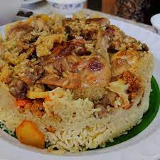
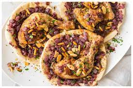
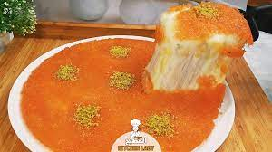

Food Page
List Of My Favorite Food
Other Pages
مقلوبه
تعرف أكلة المقلوبة في الأردن وفلسطين ولبنان منذ القدم، وكانت تسمى في القدم الباذنجانية، بسبب استخدام الباذنجان فيها كمكون أساسي، وحين جاء فتح مدينة القدس على يد الفاتح المسلم صلاح الدين الأيوبي، بحيث دخل هو وجنوده المدينة المقدسة، فاحتفل الناس بهذا النصر العظيم وقدموا الطعام لصلاح الدين وجنوده، فقدموا له الباذنجانية، وأعجبته كثيراً فعندما سأل عن اسمها وصفها بالطبخة المقلوبة، بحيث أن الطبخة تقلب في أطباق التقديم، ومن هنا جاءت تسميتها بالمقلوبة
مسخن
المُسخّن أو المحمّر هو طبق فلسطيني من الدجاج المشوي المطبوخ مع البصل والسمّاق والفلفل الإفرنجي والزعفران مع حبوب الصنوبر مقدمةً لفائف المسخن على خبز الطابون، جاءت هذه المكونات من البيئة الفلاحية في فلسطين، المسخن أكلة تراثية ومن أشهر الأكلات التي تشتهر بها مدينتي جنين وطولكرم.
كنافة
الكنافة النابلسية نوع من الحلويات تشتهر بصناعتها مدينة نابلس الفلسطينية وهي حلوى لذيذة من الحلويات التي تؤكل في بلاد الشام وهذه الحلوى لها رواج كبير بين العرب كما أن كثيراً من النابلسية الأغنياء يقومون بافتتاح سلسلة محلات حول العالم للكنافة النابلسية والحلويات الشرقية وخاصة في الدول العربية، وهي مشهورة جداً في فلسطين وسوريا والأردن ولبنان والعراق. كنافة نابلسية مع الكاجو وهي تتكون من عجينة الكنافة المشهورة وهي شعيرية على شكل خيوط طويلة، مضاف إليها السمن والقطر (أي السكر والماء وبعض الإضافات) وصبغة حمراء وجبن نابلسي لأنها تذوب وطعمها حلو ولكن يجب نقعها بالماء ليلة قبل الاستخدام لاستخلاص الملوحة من الجبنة وعادة تزين بالفستق الحلبي والقطر. وقد دخلت مدينة نابلس في تاريخ 18\7\2009 موسوعة غينيس للأرقام القياسية بأكبر صينية كنافة نابلسية. وتزن هذه الكنافة 1765 كغم من الكنافة النابلسية بطول 74 مترا وبعرض 105 سم. وتطلب عمل أكبر صدر كنافة 700 كغم من العجينة و600 كيلو جبنة و6 أكياس من السكر بوزن 50 كغم و6 تنكات سمن بلدي و40 كغم من الفستق و22 جرة من الغاز، وتكلفة قدرها 30000 دولار.